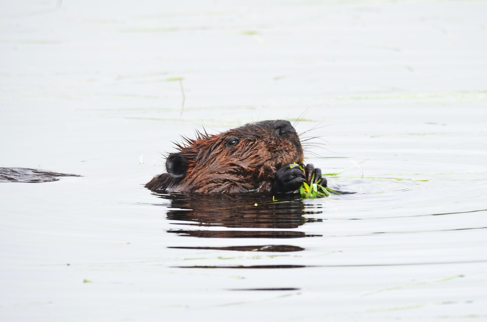
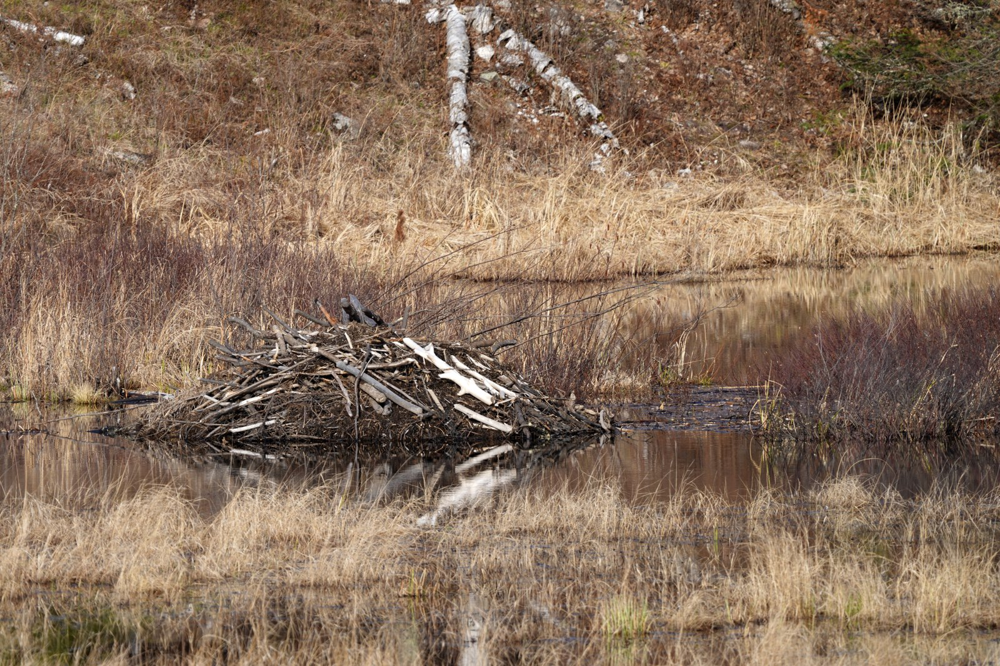

Teeth that never clock out.
Those ever-growing incisors cut wood and peel bark. Gnawing helps keep them worn down, while harder enamel at the front keeps a sharp edge.
Meet the little builders changing entire landscapes. A world of dams, deep dives, and extraordinary beavers is waiting just around the bend.
Let’s build a dam First, meet your engineer
North America’s largest rodent
Plant eater. Landscape maker.
Built for water. Busy after dark.
01 / MEET YOUR ENGINEER
Part lumberjack. Part architect. Entirely remarkable. Here’s your introduction to the North American beaver.
Those ever-growing incisors cut wood and peel bark. Gnawing helps keep them worn down, while harder enamel at the front keeps a sharp edge.
A broad, flat tail helps with steering and balance. A loud slap on the water signals danger. Webbed hind feet provide most of the swimming power.
Beavers live in family groups: parents, young kits, and often yearlings. They’re mostly active at dusk and at night, and they don’t hibernate.
Field notes informed by ODFW: Living with Beavers and ODFW’s species guide .
02 / ONE BRANCH AT A TIME
How does a beaver actually build a dam? Follow the transformation, from the first stick to a thriving wetland.
AN INTERACTIVE FIELD NOTEA beaver looks for a small stream with a gentle gradient, a steady supply of water, and woody plants nearby. A dam can turn shallow running water into a deeper, safer place to live.
Why deeper water? It helps beavers reach food and enter their shelter underwater, away from many land predators.
A dam isn’t a house. It holds back water. A lodge or bank den is the home. And beavers in naturally deep water may not need a dam at all. Explore the science

03 / THE RIPPLE EFFECT
A beaver changes the water. The water changes everything else. That’s why these animals are called ecosystem engineers.
Dams slow the flow, help water spread into floodplains, and can raise the local water table.
Ponds and wetlands provide habitat for frogs, waterbirds, insects, and fish. In suitable places, pools offer young salmon food and shelter.
Wet streambanks can help buffer dry conditions and slow wildfire spread. Dams can also trap sediment and reduce bank erosion.
Good neighbors need good planning. Rising water can also flood roads and property. Coexistence tools can help; don’t alter a dam or relocate wildlife yourself. Get guidance from ODFW
A NOTE FOR YOUR NEXT WALK
Freshly gnawed stumps, peeled sticks, and quiet ponds can be clues. Watch from a distance, keep dogs leashed, and leave dams and lodges undisturbed. A crossing sign is an invitation to notice—not a guarantee of a sighting.
04 / DOWN THE NEXT RABBIT—ER, BEAVER—HOLE
No dead-end facts. Follow these trails into wildlife biology, coexistence, and Oregon history.
Biology, family life, habitat, and what to look for in Oregon.
OREGON DEPT. OF FISH & WILDLIFE LIVE ALONGSIDE THEMWetland benefits, practical coexistence, and help for landowners.
OREGON DEPT. OF FISH & WILDLIFE GO A LITTLE DEEPERExplore beavers, the fur trade, and Oregon’s ecological history.
THE OREGON ENCYCLOPEDIAA FEW GOOD QUESTIONS
They eat plants, including leaves, twigs, aquatic vegetation, and the softer inner bark of woody plants. They don’t eat fish. Some branches are food; others become construction material. Read ODFW’s guide.
Not like a trowel! Beavers use their front paws to handle and pack material. Their tails help with balance on land and steering in water, and a tail slap can warn of danger. Learn more about their adaptations.
No. A dam is a barrier across flowing water. A lodge is a shelter, often built from branches and mud, with an underwater entrance and a living chamber above the waterline. Some beavers live in dens dug into a bank instead. Explore beaver habitats.
Enjoy the illustration, but leave real streams to wildlife and qualified restoration teams. Changing a waterway can affect fish passage, flood nearby land, and require permits. Contact ODFW for local advice, and never approach or disturb an occupied lodge. Find coexistence guidance.
05 / RIGHT HERE IN BEAVER COUNTRY
This guide started with a beaver crossing sign at OSU-Cascades in Bend. But the connection between beavers and Oregon State runs much deeper than a sign.
The beaver is Oregon’s state animal and appears on the reverse of the state flag. At Oregon State University, it’s also a shared identity: the Beavers.
Discover OSU’s traditionsThe school yearbook became The Beaver, helping associate the beaver name with Oregon State.
Benny Beaver made his costumed debut on September 18 and became the university’s official mascot.
Same university. High Desert home.
OSU-Cascades is Oregon State University in Bend, bringing the Beaver connection to Central Oregon. Get to know the campus